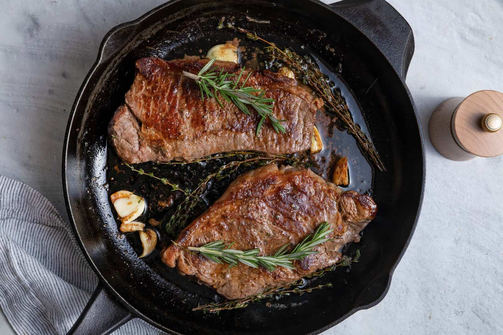

Cast Iron Steak

Description
Cook the best steak every single time in your cast iron skillet. Cooked with garlic, butter, and fresh herbs, perfect med-rare in 8 minutes!
Ingredients
- 2 (12-ounce) Ribeye or New York Strip steaks
- 1 tablespoon avocado oil
- ½ teaspoon salt
- ¼ teaspoon cracked black pepper
- 2 tablespoons unsalted butter
- 2 sprigs fresh rosemary or thyme
- 2-4 garlic cloves
Steps
- Allow the steaks to come to room temperature for 30 minutes. Then pat them dry with a paper towel and season with salt and pepper.
- Heat avocado oil in a cast iron skillet over medium-high heat until it’s shimmering.
- Place the steaks in the skillet and cook for 4 minutes on one side without touching. Use tongs to flip the steaks and cook for 4 more minutes on the other side.
- Reduce heat to medium-low, add butter, garlic and rosemary or thyme sprigs. Once the butter melts, tilt the skillet and spoon the butter over the steaks repeatedly until the steaks reach desired doneness, keeping in mind that the temperature will continue to rise about 5 degrees after you remove from heat and the steaks rest.
- Transfer the steaks to a plate or cutting board, and allow them to rest for 5 minutes before slicing or serving. Serve with the melted butter, garlic and rosemary from the skillet.
Home